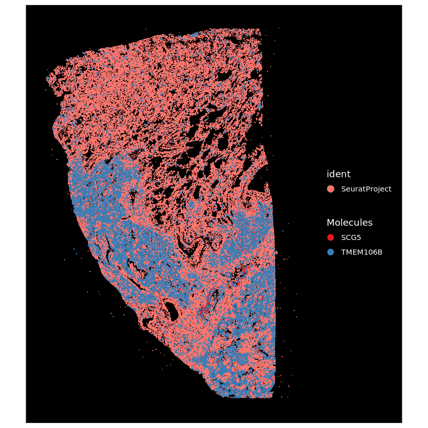
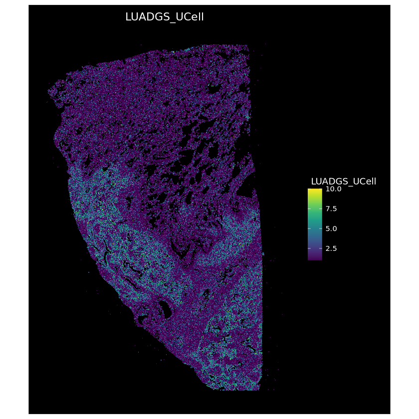

Code
Loading required package: SeuratObject
Loading required package: sp
Attaching package: ‘SeuratObject’
The following objects are masked from ‘package:base’:
intersect, t
Loading required package: SeuratObject
Loading required package: sp
Attaching package: ‘SeuratObject’
The following objects are masked from ‘package:base’:
intersect, t
#Redefine ReadXenium()
ReadXenium <- function (data.dir, outs = c("matrix", "microns"), type = "centroids",
mols.qv.threshold = 20)
{
type <- match.arg(arg = type, choices = c("centroids", "segmentations"),
several.ok = TRUE)
outs <- match.arg(arg = outs, choices = c("matrix", "microns"),
several.ok = TRUE)
outs <- c(outs, type)
has_dt <- requireNamespace("data.table", quietly = TRUE) &&
requireNamespace("R.utils", quietly = TRUE)
data <- sapply(outs, function(otype) {
switch(EXPR = otype, matrix = {
matrix <- suppressWarnings(Read10X(data.dir = file.path(data.dir,
"cell_feature_matrix/")))
matrix
}, centroids = {
if (has_dt) {
cell_info <- as.data.frame(data.table::fread(file.path(data.dir,
"cells.csv.gz")))
} else {
cell_info <- read.csv(file.path(data.dir, "cells.csv.gz"))
}
cell_centroid_df <- data.frame(x = cell_info$x_centroid,
y = cell_info$y_centroid, cell = cell_info$cell_id,
stringsAsFactors = FALSE)
cell_centroid_df
}, segmentations = {
if (has_dt) {
cell_boundaries_df <- as.data.frame(data.table::fread(file.path(data.dir,
"cell_boundaries.csv.gz")))
} else {
cell_boundaries_df <- read.csv(file.path(data.dir,
"cell_boundaries.csv.gz"), stringsAsFactors = FALSE)
}
names(cell_boundaries_df) <- c("cell", "x", "y")
cell_boundaries_df
}, microns = {
transcripts <- arrow::read_parquet(file.path(data.dir, "transcripts.parquet"))
transcripts <- subset(transcripts, qv >= mols.qv.threshold)
df <- data.frame(x = transcripts$x_location, y = transcripts$y_location,
gene = transcripts$feature_name, stringsAsFactors = FALSE)
df
}, stop("Unknown Xenium input type: ", otype))
}, USE.NAMES = TRUE)
segmentations.data <- list(centroids = CreateCentroids(data$centroids),
segmentation = CreateSegmentation(data$microns))
coords <- CreateFOV(coords = segmentations.data, type = c("segmentation",
"centroids"), molecules = data$microns, assay = "RNA")
xenium.obj <- CreateSeuratObject(counts = data$matrix[["Gene Expression"]],
assay = "RNA")
xenium.obj[["BlankCodeword"]] <- CreateAssayObject(counts = data$matrix[["Unassigned Codeword"]])
xenium.obj[["ControlCodeword"]] <- CreateAssayObject(counts = data$matrix[["Negative Control Codeword"]])
xenium.obj[["ControlProbe"]] <- CreateAssayObject(counts = data$matrix[["Negative Control Probe"]])
xenium.obj[["fov"]] <- coords
return(xenium.obj)
}Rasterizing points since number of points exceeds 100,000.
To disable this behavior set `raster=FALSE`
Rasterizing points since number of points exceeds 100,000.
To disable this behavior set `raster=FALSE`
Warning message in brewer.pal(n = length(x = levels(x = molecules$molecule)), name = "Set1"):
“minimal value for n is 3, returning requested palette with 3 different levels
”
Normalizing layer: counts
Min. 1st Qu. Median Mean 3rd Qu. Max.
0.00000 0.00000 0.00000 0.02460 0.05541 0.35481 